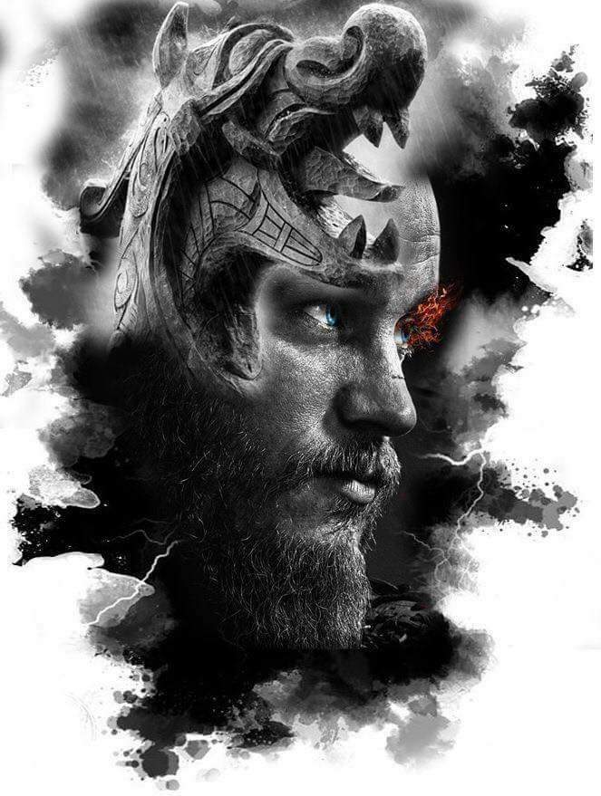

Alegra- me saber que Odin se prepara para o banquete. Logo, estarei bebendo hidromel em chifres curvados. Este herói que entra em Valhalla não lamenta sua morte! Não devo entrar no salão de Odin com medo. Lá, esperarei meus filhos se juntarem a mim. E, quando se juntarem, deleitar-me-ei com suas histórias de triunfo. O Aesir me receberá. Minha morte vem sem pedido de desculpas. E recebo as Valquírias para me levarem para casa.“
Ragnar Lothbrok 